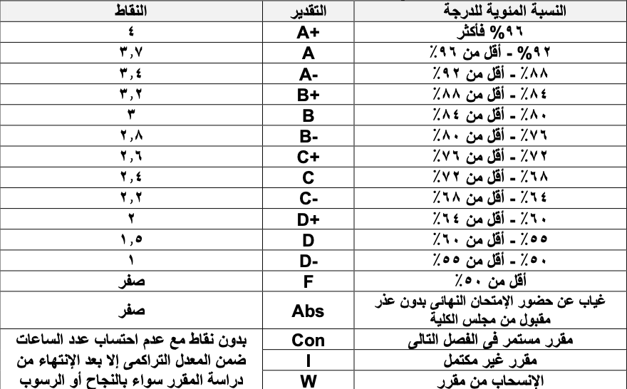

مادة (١): الدرجة العلمية
تمنح جامعة حلوان الاھلیة بناء على طلب مجلس الكلیھ درجة بكالوریوس علوم الحاسب وتكنولوجیا المعلومات في تخصصات منها "علوم البیانات"
مادة (٢): المشاركة مع الجامعات الأخري
یجوز تنظیم برامج دراسیة مؤھلة لدرجة البكالوریوس في التخصص المشار إلیھ في المادة رقم (١) بالمشاركة مع الجامعات الأجنبیة أوالجامعات الخاصة أو الكلیات او المعاھد الأخري الخاضعة لقانون تنظیم الجامعات.
مادة (٣): الإشراف العلمي على البرامج
یتولي قسم نظم المعلومات الإشراف العلمي على البرنامج. ویتولى أعمال منسق البرنامج أستاذ من اعضاء ھیئھ التدریس بالكلیھ. وتكون مھام مجلس القسم كالتالى:
١-اقتراح إضافة فصل دراسة صیفى.
٢-التوصیة بقبول قید الطالب طبقا للشروط التي یقررھا المجلس الأعلى للجامعات ومكتب تنسیق الجامعات الأھلیة.
٣-التوصیة بإضافة شروط إضافیة لقبول قید الطلبة ورفعھا لمجلس الجامعة.
٤-عمل المقاصات وتحدید المقررات التكمیلیة طبقا لحالة قبول الطالب.
٥-اقتراح فترات التسجیل في المقررات والقواعد المنظمة للعملیات المرتبطة بتسجیل المقررات.
٦-التوصیة باتخاذ القرارات المناسبة طبقا لھذه اللائحة بشأن قبول او رفض إضافة مقررات او الانسحاب منھا.
٧-اقتراح المصروفات الخاصة بالقید في المقررات كمستمع واعتمادھا من مجلس الكلیة.
٨-ما یستجد من مھام یُكلفھ بھا مجلس الكلیة.
ماده (٤): نظام الدراسه
تكون الدراسة وفقاً لنظام الساعات المعتمدة. كما یتم التعامل مع الساعة المعتمدة على انھا وحدة قیاس دراسیة تستخدم لتحدید وزن المقرر. ویتم احتساب الساعة المعتمدة على انھا ساعة دراسیة في حالة المحاضرات النظریة، وساعتین دراسیتین في حالة المحاضرات العملیة أو التطبیقات. كذلك یتم تعیین العبء الدراسي للطالب في كل فصل دراسي بنا ًء على عدد الساعات المعتمدة المطلوب إجتیازھا وفقاً لأحكام ھذه اللائحة. كما تنظم ھذه اللائحة عدد الساعات المعتمدة المطلوب اجتیازھا كمتطلبات أساسیة للحصول على الدرجة العلمیة بنظام التفرغ الكلي أو الجزئي.
ینقسم العام الدراسي إلى فصلین دراسیین أساسیین(الخریف والربیع)مدة كل منھا خمسة عشر أسبوعاً دراسیا. ویمكن أن یضاف فصل دراسي صیفي بناء على إقتراح مجلس الكلیة وموافقة مجلس الجامعة. ویسمح بالقید طبقاً للقواعد الموضحة بالمادتین (٥)،(٦) ویتم احتساب التقدیرات طبقاً للمادة(١٩)
مادة (٥): مواعيد الدراسة والقيد
یحدد مجلس الجامعة بدایة ونھایة الفصول الدراسیة ومواعید التقدم والقید لكل عام دراسي. تقدم طلبات القید فى كل فصل دراسى اساسى طبقا للمواعید التى یحددھا مجلس الجامعة مع استیفاء شروط القید وسداد الرسوم بحیث لا تتجاوز موعد بدایة الدراسة طبقاً للاجراءات والمواعید التي یحددھا مجلس الجامعة.
مادة (٦): شروط القيد
في مرحلة البكالوریوس یتم قید الطلبة الحاصلین على الثانویة العامة شعبة علمي الریاضیات وعلمي العلوم طبقا لقررات المجلس الأعلى للجامعات، والمرشحین من خلال مكتب تنسیق القبول بالجامعات الأھلیة، كما یتم قبول طلاب الشھادات المعادلة والطلاب الوافدین طبقا للقواعد المنظمة لذلك والتي تضعھا الجھات المختصة.
یجوز لمجلس الكلیھ أن یضیف شروطاً أخرى یراھا ضروریة للقبول مثل إجراء امتحان شفھي أو تحریري للطلاب الجدد، وتحدید عدد الطلاب المقبولین حسب الإمكانیات المتاحة للبرنامج، كما یجوز أن یقرر مقررات استكمالیة كشرط لقبول الطالب.
في حالة تحدید مجلس الكلیھ لمقررات استكمالیة على الطالب وكان عددھا ثلاث مقررات دراسیة على الأكثر، یمكن أن یقید الطالب لنیل الدرجة مع دراسة ھذه المقررات على التوازي ولا تحتسب ھذه الساعات ضمن الساعات المطلوبة للحصول على الدرجة المقید بھا.
یتم التسجیل لدراسة المقررات المختلفة بالبرنامج في بدایة كل فصل دراسي في الفترة التي یحددھا مجلس الجامعة بعد موافقة المرشد الأكادیمیي المختص.
مادة (٧) تسجيل المقررات
أ- یُسمح للطلبة بتسجیل المقررات خلال الفترة التي یقررھا مجلس الكلیة في ضوء قررات مجلس الجامعة.
ب- لا یُسمح للطالب بالتسجیل فى مقرر إلا إذا نجح فى متطلباتھ التي تحددھا ھذه اللائحة. ویجوز بنا ًء على موافقة مجلس الكلیة التجاوز عن ھذا الشرط إذا كان الطالب سبق لھ التسجیل في متطلب المقرر ولم یجتازه أو یكون مسجلاً في المتطلب في نفس الوقت.
ج- لتفعیل الدراسة في اى مقرر لابد ان یكون الحد الأدني لعدد الطلاب المسجلین فى ھذا المقرر لا یقل عن ١٠ طلاب.
مادة (٨) العبء الدراسى
الحد الأدني للتسجیل في الفصل الدراسي الواحد (٩) ساعات معتمدة والحد الأقصى للساعات المسجلة طبقا لما یلي:
١- ساعة معتمدة للطلاب المستجدین (من غیر المحولین من كلیات مناظرة) فى الفصل الدراسى الأول لإلتحاقھم بالكلیة.
٢- ٢١ ساعة معتمدة للطلاب الحاصلین على CGPA فى بدایة الفصل الدراسى أعلى من أو یساوى ٣ وكذلك فى حالة تخرج الطالب فى ذات الفصل.
٣- ١٨ ساعة معتمدة للطلاب الحاصلین على CGPA فى بدایة الفصل الدراسى أعلى من أو یساوى ٢ وأقل من ٣.
٤- ١٥ ساعة معتمدة للطلاب الحاصلین على CGPA فى بدایة الفصل الدراسى أعلى من أو یساوى ١ وأقل من ٢.
٥- ١٢ ساعة معتمدة للطلاب الحاصلین على CGPA فى بدایة الفصل الدراسى أقل من ٢.
بالإضافة للساعات المذكورة أعلاه، یسمح للطلاب الراغبین فى تسجیل مقرر واحد إضافى حاصلین بھ سابقا على تقدیر غیر مكتمل.
بالنسبة للفصل الصیفى:
• الفصل الدراسى اختیارى للطالب.
• الحد الأقصى للساعات المسجلة للطلاب ھو ٩ ساعات معتمدة.
مادة (٩) حذف وإضافة المقررات
تتاح فترة زمنیة مدتھا أسبوعان من بدایة كل فصل دراسى لتسجیل مقرر دراسي اضافى. كما یجوز الحذف حتى نھایة الأسبوع الرابع، تحت إشراف المرشد الأكادیمي وذلك وفقا ً لقواعد ینظمھا مجلس الكلیة مع مراعاة الحد الأقصي والحد الأدنى للعبء الدراسي المسموح بھ وفقاً لأحكام ھذه اللائحة. على ألا یؤثر ذلك على قواعد الانتظام المحددة باللائحة وذلك لكي یتم السماح للطالب بدخول الامتحان النھائي في حالة الإضافة لمقرر.
مادة (١٠) الانسحاب من المقرر
أ- یجوز للطالب أن ینسحب من مقرر أو أكثر خلال ثلاث أسابیع على الأكثر من انتھاء الفترة المسموح بالحذف فیھا خلال الفصل الدراسي والموضحة في المادة رقم (٩) وذلك بنا ًء على توصیة المرشد الاكادیمى وموافقة مجلس الكلیھ، بحیث لا یقل عدد الساعات المسجلة للطالب عن الحد الأدنى للتسجیل فى الفصل الدراسي الواحد (٩ ساعات معتمدة) وفى ھذه الحالة لایُعد الطالب راسباً فى المقررات التى انسحب منھا ویحتسب لھ أنھ "منسحب بتقدیر W" فقط ویتعین على الطالب في ھذه الحالة عند إعادة المقرر الالتزام بجمیع القواعد المعمول بھا للتسجیل بمقرر جدید.
ب- إذا انسحب الطالب من مقرر أو أكثر بعد الفترة المحددة لذلك دون عذر قھري یقبلھ مجلس الكلیة یحتسب لھ تقدیر "راسب" فى المقررات التى انسحب منھا. أما إذا تقدم قبل الامتحان بعذر قھري یقبلھ مجلس الكلیة فیحتسب لھ تقدیر "منسحب W".
مادة (١١) لغة التدريس
الدراسة فى جمیع البرامج باللغتین العربیة والإنجلیزیة وفقا لمتطلبات كل مقرر دراسي.
مادة (١٢) الإرشاد الأكاديمى
یحدد مجلس الكلیة لكل مجموعة من الطلاب مرشدا أكادیمیا من أعضاء ھیئة التدریس وذلك لتقدیم النصح والإرشاد خلال فترة الدراسة وللمساعدة فى اختیار المقررات الدراسیة التى یدرسھا والتسجیل فیھا وتوجیھھ طوال فترة دراستھ بالبرنامج. ویقوم مجلس الكلیة بتوزیع الطلاب المقیدین بالبرنامج على ھیئة التدریس، والطالب ھو المسؤول عن المقررات التى یقوم بالتسجیل فیھا بنا ًء على رغبتھ، وللطالب الحق في تغییر المرشد الاكادیمى بموافقة مجلس الكلیة.
مادة (١٣) تأجيل الدراسة
یحق للطالب تأجیل الدراسة اثناء دراسة المقررات وفقاً لما یلي:
١- تقدم طلبات تأجیل الدراسة لقسم شئون الطلبة في مواعید التسجیل المحددة بالمواد السابقة.
٢- في حالة الموافقة یثبت للطالب في سجلھ الأكادیمي الموافقة على تأجیل الدراسة لذلك الفصل.
٣- یجوز للطالب أن یؤجل دراسة المقررات لمدة لا تزید عن فصلین دراسیین إلا في الحالات الاستثنائیة التي یقبلھ مجلس الكلیة.
٤- لا تحسب مدة تأجیل الدراسة ضمن المدة المسموح بھا للحصول على درجة البكالوریوس.
٥- إذا انقضت فترة تأجیل الدراسة الموافق علیھا، ولم یتقدم الطالب للتسجیل أو تجدید التأجیل یعتبر منقطعا عن الدراسة ویسجل الفصل الدراسي في سجلھ الأكادیمي باعتباره منقطعا ما لم یتقدم بما یثبت سبب تأخره ویوصى بھ مجلس الكلیة، ویقوم مجلس الكلیة برفع توصیتھ الى مجلس الجامعة لعرضھ والموافقة علیھ او رفضھ. وفي حالة عدم موافقة مجلس الجامعة على طلب التسجیل، یُلغى قید ھذا الطالب.
مادة (١٤) إلغاء القيد
أ- یعتبر الطالب منقطعاً عن الدراسة إذا لم یسجل فى فصل دراسي أو انسحب من جمیع مقررات الفصل الدراسي بدون عذر مقبول.
ب- یجوز للطالب الانقطاع عن الدراسة بعذر مقبول بحد أقصي فصلین متتالیین أو أربعة فصول غیر متتالیة وتحتسب ھذه المدة كإیقاف قید (ویسجل في سجلھ الأكادیمي بإعتباره منقطعا ما لم یتقدم بما یثبت سبب تأخره). ویتم الغاء قید الطالب و یفصل من البرنامج في الحالات التالیة:
١- إذا انقطع عن الدراسة لفترة أطول من فصلین متتالیین أو أربعة فصول غیر متتالیة بدون عذر یقبلھ مجلس الكلیھ ویوافق علیھ مجلس الجامعة.
٢- الإخلال بالقیم الأخلاقیة والأكادیمیة مثل حالات الغش ومخالفات الأمانة العلمیة التي تستوجب شطب القید، بنا ًء على قرار لجنة تحقیق یتم تشكیلھا بمعرفة مجلس الكلیة واعتماد قرار اللجنة من مجلس الكلیة.
٣- تقدمھ بطلب لسحب الملف أو إلغاء قید.
٤- إذا لم یستكمل متطلبات الحصول على درجة البكالوریوس خلال الفترة الزمنیة المحددة وفقاً لأحكام ھذه اللائحة.
٥- إذا لم یسدد الرسوم الدراسیة المقررة علیھ في المواعید المحددة لذلك.
٦- حالات أخرى یقبلھا مجلس الكلیة ویعتمدھا مجلس الجامعة.
مادة (١٥) نظام الحضور في الدراسة
أ- الدراسة فى جمیع البرامج نظامیة ولا یجوز فیھا الانتساب.
ب- یتطلب دخول الطالب الامتحان النھائي تحقیق نسبة حضور لا تقل عن ٧٥٪ من المحاضرات فى كل مقرر. وإذا تجاوزت نسبة غیاب الطالب بدون عذر مقبول فى أحد المقررات ٢٥٪ بنا ًء على تقریر أستاذ المقرر، یكون لمجلس الكلیة الحق في حرمانھ من دخول الامتحان النھائي بعد اتخاذ الإجراءات الإداریة بإنذار الطالب. وفي ھذه الحالة یعتبر الطالب راسبا في ذلك المقرر ویُوضع لھ “صفر" فى درجة الأختبار النھائى للمقرر.
ج- إذا تقدم الطالب بعذر قھري یقبلھ مجلس الكلیة عن عدم حضور الامتحان النھائي لأي مقرر خلال یومین من إجراء الامتحان یحتسب لھ تقدیر "غیر مكتمل I" فى ھذا المقرر مع الإحتفاظ بدرجة أعمال السنة بشرط ألا یكون قد تم حرمانھ من دخول الامتحانات النھائیة.
د- إذا حصل الطالب على تقدیر "غیر مكتمل I" في مقرر او أكثر في فصل دراسى ُمعین یُتاح لھ فرصة أداء الامتحان النھائي في ھذا المقرر او المقررات مع امتحانات الفصل الدراسي التالي. وتُحتسب الدرجة النھائیة للطالب على أساس الدرجة الحاصل علیھا فى الامتحان النھائي إضافة إلى الدرجة السابق الحصول علیھا فى الأعمال الفصلیة لذات المقرر.
ه- یجوز لمجلس الكلیة وحسب طبیعة المقررات الدراسیة ان یقرر تدریس مقرر او أكثر بنمط التعلیم الھجین، بحیث تكون الدراسة فى المقرر بنسبة من ٣٠٪ الى ٤٠٪ وجھا لوجھ وبنسبة من ٦٠٪ الى ٧٠٪ بنظام التعلیم عن بعد، او بأى نسبة اخرى. على ان یتم عرض ذلك على مجلس شئون التعلیم والطلاب بالجامعة للموافقة علیھ ورفعھ الى مجلس الجامعة لاعتماده.
مادة (١٦) ضوابط الامتحانات
١- یعقد الامتحان النھائي في نھایة كل فصل دراسي.
٢- النھایة العظمي لكل مقرر ١٠٠ درجة تقسم على النحو التالى:
-(٤٠) أربعون درجة أعمال الفصل الدراسي (التمارین العملیة، الأبحاث، حلقة النقاش، الخ)
-(٦٠) ستون درجة للإمتحان النھائى بنھایة كل فصل دراسي، تقسم إلى:
ا-(٥٠) خمسون درجة للامتحان التحریري
ب-(١٠) عشرة درجات للامتحان العملي - وذلك في حالة المقررات التى تتطلب عقد امتحان عملى أو وفقاً لما یقرره مجلس الكلیة بخصوص الامتحانات التطبیقیة والعملیة.
٣- الحد الأدنى للنجاح فى المقرر الدراسي ھو ٥٠٪ من النھایة العظمى بشرط الحصول على ٢٥٪ على الأقل من درجة الامتحان التحریري.
٤- یجوز للطالب أن یتقدم بطلب التماس لمراجعة درجاتھ في المقرر الدراسي (مقابل رسوم یحددھا مجلس الكلیة) خلال مدة أقصاھا أسبوعین من تاریخ إعلان النتیجة.
٥- یجوز لمجلس الكلیھ وحسب طبیعة المقررات الدراسیة ان یقرر عقد الامتحان النھائى الكترونیاً فى مقرر او أكثر، كما یجوز عقد الامتحان فى كل مقرر او جزء منھ بما یسمح بتصحیحھ الكترونیا. كما یمكن مناقشة المشروع عن بعد بأستخدام وسائل التعلیم عن بعد. على ان یتم عرض ذلك على مجلس شئون التعلیم والطلاب بالجامعة للموافقة علیھ ورفعھ الى مجلس الجامعة لاعتماده.
٦- زمن الامتحان النھائي التحریري ھو ساعتین فقط لجمیع المقررات.
مادة (١٧) الإنذارات
یتم توجیھ انذار اكادیمى للطالب إذا كان معدلھ التراكمى أقل من ٢. ویتم الغاء قید الطالب (فصلھ) من البرنامج إذا كان معدلھ التراكمى أقل من ٢ خلال أربعة فصول دراسیة نظامیة متتالیة. فیما عدا الفصل الدراسي الأول للطالب في الكلیة ویوضع تحت الملاحظة الأكادیمیة. كما یجوز لمجلس الكلیة منح الطالب فرصة استثنئایة لرفع معدلھ التراكمى بعذر مقبول، ویحتسب المعدل التراكمى طبقاً للمادة رقم (١٩).
مادة (١٨) مقرر المشروع
١- یقسم الطلاب في مجموعات لإنتاج مشروع تطبیقي في إطار عمل جماعي.
٢- یقوم أحد أعضاء ھیئة التدریس بالإشراف على كل مشروع.
٣- الدراسة بمقرر المشروع على فصلین دراسیین وھما مقرران اجباریان ویكون الامتحان النھائي فى نھایة كل فصل دراسى لكل مقرر على حدي وتوزع الدرجات بنسبة ٥٠٪ لأعمال السنة، ٥٠٪ للامتحان الشفوى (مناقشة المشروع).
ماده (١٩) نسب توزيع المقررات وتقديراتها وما يقابلها من نقاط:
١- تقدر نقاط تقدیرات المقررات على النحو التالي:

٢- یعتبر الطالب ناجحاً في مقرر إذا حصل على تقدیر “-D” على الأقل للمقرر.
٣- یتم حساب مجموع نقاط المقررات التي انھاھا على أساس مجموع (حاصل ضرب عدد النقاط التي یحصل علیھا الطالب لكل مقرر في عدد الساعات المعتمدة للمقرر) وذلك لأقرب رقمین عشریین.
٤- المعدل الفصلي - ھو متوسط ما یحصل علیھ الطالب من مجموع نقاط في الفصل الدراسي، ویحسب على أساس حاصل قسمة مجموع النقاط للمقررات التي انھاھا في الفصل الدراسي على إجمالي عدد الساعات المعتمدة للمقررات التي انھاھا في الفصل الدراسي وذلك لأقرب رقمین عشریین.
٥- المعدل التراكمي CGPA ھو متوسط ما یحصل علیھ الطالب من مجموع نقاط جمیع المقررات التي انھاھا خلال الفترات الدراسیة السابقة لحساب المعدل، وفى حالة الانتھاء من نفس المقرر أكثر من مرة یتم أخذ أفضل مجموع نقاط لھذا المقرر عند احتساب المعدل التراكمي. ویتم حساب المعدل التراكمى CGPA طبقا للمعادلة التالیة:
CGPA = مجموع (عدد نقاط التي حصل عليها الطالب في المقرر × عدد الساعات المعتمدة لذات المقرر) لكل المقررات المسجلة ÷ مجموع عدد الساعات المعتمدة التى تم الانتهاء منها
٦- الحد الأدنى للمعدل التراكمى CGPA للنجاح او الحصول على الدرجة العلمیة ھو ٢.
٧- لا تدخل المقررات التي درسھا الطالب في جامعة أخرى وقام بمعادلتھا في حساب متوسط النقاط إلا إذا تم معادلتھا من قبل مجلس الكلیة وبشرط عدم الاستفادة منھا للحصول على درجة علمیھ اخرى وان لا تزید نسبة المقررات التى یتم اعفاؤه منھا عن ٣٠٪ من إجمالي عدد المقررات الدراسیة اللازمة لمنح الدرجة العلمیة.
٨- ینتقل الطالب بین المستویات المختلفة في بدایة كل فصل دراسي وذلك طبقاً للجدول التالى حسب عدد الساعات اللازمة للانتقال بین المستویات المختلفة:
٩- یتم حساب التقدیر العام للطالب بناء على المعدل التراكمي طبقاً للجدول التالى:
١٠- یمنح الطالب شھادة بتقدیرات المقررات باللغة العربیة أو باللغة الإنجلیزیة وفقاً لطلبھ.
١١- یمنح الطالب مرتبة الشرف إذا لم یقل معدلھ التراكمى CGPA اثناء دراستھ عن ٣،٥ وبشرط ألا یرسب في أي مقرر انھاه.
مادة (٢٠): التدريب الميداني
١- تنظم الكلیة تدریباً میدانیاً صیفیاً لطلاب البرنامج المجتازون لنسبة٥٥٪على الأقل من عددالساعات اللازمة للتخرج.
٢- یتم التدریب بواقع ١٢٠ساعةعلى فصلین بمعدل ٦٠ساعة لكل فصل دراسى صیفى.
٣- یتم تخصیص عضو ھیئة تدریس كمسئول عن التدریب مع عدد من أعضاء الھیئة المعاونة وذلك لمتابعة المشاركیین فى التدریب سنویا. ویكون دورھم وضع التقییم الخاص لكل طالب طبقا للمعاییر التى یتم تحدیدھا من قبل مجلس الكلیة.
٤- مقرر التدریب متطلب من متطلبات التخرج، ولا یحتسب ضمن الساعات المعتمدة وإنما ھو مقرر بدون ساعات معتمدة وبالتالى لا یحتسب ضمن المجموع التراكمى.
مادة (٢١) الإعادة ورفع المعدل التراكمي:
- إعادة مقرر رسب فيه الطالب سابقا:
١- إذا رسب الطالب فى مقرر فعلیھ إعادة دراستھ والامتحان فیھ مرة أخرى فإذا نجح فى المقرر بعد إعادة دراستھ تحتسب لھ الدرجة الفعلیة التى حصل علیھا وبما لا یزید عن B٨٣.
٢- یحسب معدلھ التراكمى على ھذا الأساس، مع احتساب عدد ساعات المقرر مرة واحدة.
٣- تظھر جمیع مرات الإعادة والدرجة (أو التقدیر) الحاصل علیھ الطالب فى كل إعادة فى الشھادة التفصیلیة الخاصة بالطالب.
٤- یدفع الطالب مقابل إعادة المقرر بما یوازى المقابل الذى یدفعھ فى حالة تسجیلھ للمقرر فى الفصل الدراسى الصیفى.
- إعادة مقرر نجح فيه الطالب سابقا وذلك لرفع معدله التراكمي المجمع لتجنب الفصل:
١- فى حالة حصول الطالب على معدل تراكمى مجمع في بدایة الفصل الدراسي أقل من ٢ (الطالب تحت الملاحظة الأكادیمیة)، یجب علیھ رفع معدلھ التراكمى.
٢- إذا رغب الطالب المذكور فى النقطة السابقة فى إعادة مقرر سبق وأن نجح فیھ لرفع معدلھ التراكمى المجمع لتجنب الفصل، فعلیھ إعادة دراستھ والامتحان فیھ مرة أخرى، وفى ھذه الحالة یحصل على الدرجة الأعلى من الدرجات الحاصل علیھا فى جمیع مرات الإعادة وبما لا یزید عن (٨٣).
٣- یجب أن یكون المقرر تابع للمستوى المقید بھ الطالب أو تابع لمستوى أقل من المستوى المقید بھ الطالب بمستوى واحد.
٤- لا یوجد حد أقصى لتلك المقررات وإنما یمكن للطالب إعادة أى عدد من المقررات سبق وإن نجح بھا من أجل رفع معدلھ التراكمى المجمع CGPA إلى ٢.
٥- یحسب معدلھ التراكمى على ھذا الأساس، مع احتساب عدد ساعات المقرر مرة واحدة.
٦- تظھر جمیع مرات الإعادة والدرجة (أو التقدیر) الحاصل علیھ الطالب فى كل إعادة فى الشھادة التفصیلیة الخاصة بالطالب.
٧- یدفع الطالب مقابل إعادة المقرر بما یوازى المقابل الذى یدفعھ فى حالة تسجیلھ للمقرر فى الفصل الدراسى الصیفى.
- إعادة مقرر نجح فيه الطالب سابقا وذلك لرفع معدله التراكمي المجمع للتحسين:
١- إذا رغب الطالب فى إعادة مقرر سبق وأن نجح فیھ لرفع معدلھ التراكمى المجمع CGPA، فعلیھ إعادة دراستھ والامتحان فیھ مرة أخرى وفى ھذه الحالة یحصل على الدرجة الأعلى من الدرجات الحاصل علیھا في جمیع مرات الإعادة وبما لایزید عن ٨٣.
٢- الحد الأقصى لإعادة أى من المقررات سبق وأن نجح بھا من أجل رفع معدلھ التراكمى المجمع للتحسین ٣ مقررات.
٣- یجب أن یكون المقرر تابع للمستوى المقید بھ الطالب أو تابع لمستوى أقل من المستوى المقید بھ الطالب بمستوى واحد.
٤- یحسب معدلھ التراكمى على ھذا الأساس، مع احتساب عدد ساعات المقرر مرة واحدة.
٥- تظھر جمیع مرات الإعادة والدرجة (أو التقدیر) الحاصل علیھ الطالب فى كل إعادة فى الشھادة التفصیلیة الخاصة بالطالب.
٦- یدفع الطالب مقابل إعادة المقرر بما یوازى المقابل الذى یدفعھ فى حالة تسجیلھ للمقرر فى الفصل الدراسى الصیفى.
مادة (٢٢): شروط الحصول على درجة البكالوريوس وتخرج الطالب
١- تمنح درجة البكالوریوس في تخصص برمجیات الوسائط المتعددة متى استوفى الطالب متطلبات الحصول علیھا.
٢- الحد الادنى لتخرج الطالب ھو (ثلاث سنوات دراسیة) أى ستة فصول نظامیة (خریف - ربیع)
٣- یتخرج الطالب فى حالة استیفاءه لمتطلبات البرنامج الأكادیمیى فى نھایة الفصل الدراسي الأول، أو الثانى، أو الصیفى (في حالة اجتیاز ستة فصول نظامیة) حسب حالة كل طالب.
٤- اجتیاز ما تنص علیھ الجامعة من متطلبات التخرج الأخرى، ان وجدت.
٥- اجتیاز التدریب المیداني (بدون ساعات معتمدة)
٦- أن یحقق الطالب الحد الأدنى للمجموع التراكمى CGPA والذي یساوى ٢ أو أكثر.
٧- ان یجتاز الطالب بنجاح دراسة (١٣٨) ساعة معتمدة ووفقاً لنوع المتطلب الذي تتبعھ الساعات، بحیث یتم تقسیم ھذه الساعات طبقا للـمعاییر الأكادیمیة المرجعیة القومیة NARS كالتالى:
مادة (٢٣): تطبيق اللائحة
تطبق احكام هذه اللائحة على الطلبة المستجدین في بدایة العام الدراسي العام الجامعي وذلك بعد اعتمادھا. كما تطبق أحكام ھذه اللائحة اعتبارا من العام الدراسي التالي لاعتمادھا على الطلاب الباقین للإعادة بالمستوى الأول. وكذا المنقولین للمستوى الثاني والمستمرون بھذا المستوي على أن تجري لھم المقاصة العلمیة اللازمة.
مادة (٢٤) أحكام تنظيمية
أ- یجوز لمجلس الكلیة أن ینظم دورات تدریبیة أو دراسات تنشیطیة فى الموضوعات التى تدخل ضمن اختصاص البرامج الدراسیة المختلفة.
ب- یجوز لمجلس الكلیة الموافقة على عقد دراسة صیفیة مكثفة (فصل صیفي) لمدة ثمانیة أسابیع فى بعض المقررات. ووفقاً لما تسمح بھ إمكانیات وظروف الكلیة على ألا یسجل الطالب في أكثر من تسع ساعات معتمدة.
ج- یجوز لمجلس الجامعة الموافقة على اقتراح مجلس الكلیة بتحصیل مقابل خدمات تعلیمیة من الطلاب الدارسین فى الفصل الصیفى. كما یجوز أیضاً لمجلس الجامعة الموافقة على صرف مكافأت خاصة بنا ًء على اقتراح مجلس الكلیة لأعضاء ھیئة التدریس ومعاونیھم من القائمین بالتدریس فى الفصل الصیفى.
مادة (٢٥): النظام الكودى للمقررات
یتكون كود أى مقرر من ٧ خانات كالأتى:
كود التصنيف: ھو رمز یوضح الفئة التي یتم تصنیف المقرر لھا. ھذا الرمز یتم تعریفھ طبقا للجدول الأتى:
كود المستوى: ھو رمز یوضح المستوى الذي یتم تدریس المقرر فیھ. ھذا الرمز یتم تعریفھ طبقا للجدول التالى:
وتشتمل مواد اللائحة التالیة على قوائم المقررات الدراسیة المختلفة موضحا عدد الساعات المعتمدة لكل مقرر وما یناظرھا من الساعات الفعلیة من المحاضرات وكذا من المعامل والتمارین إن وجد.